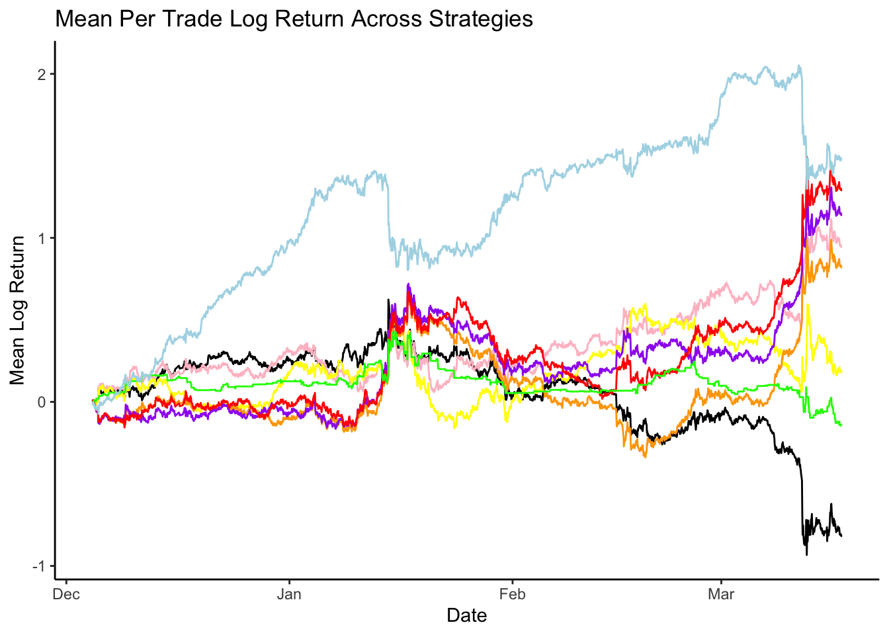

1
thesisdowndss::thesis_pdf: default
Introduction
Literature Review
2
Data
2.1
Twitter
2.1.1
Tweet Removal
2.1.2
Sentiment Analysis
2.2
Google Search Volume
2.3
Price and Volume
2.4
Exploratory Data Analysis
3
Methodology
3.1
Log Returns
4
Results
4.1
Trading Strategies
5
Visualization of trades
6
The mean pnl’s across hours
7
For this one we should just save all positions
Discussion
Appendix
A
The First Appendix
B
The Second Appendix, for Fun
References
Published with bookdown
Modelling Altcoin Price Variation with Sentiment Based Predictors
Chapter 7
For this one we should just save all positions

Have another plot net fees
Table 7.1:
Percent Returns Net Fees
10 bps
5 bps
2.5 bps
XGBoost Top 20
32.5%
60.5%
76.6%
LSTM Top 20
159.2%
175.8%
184.5%